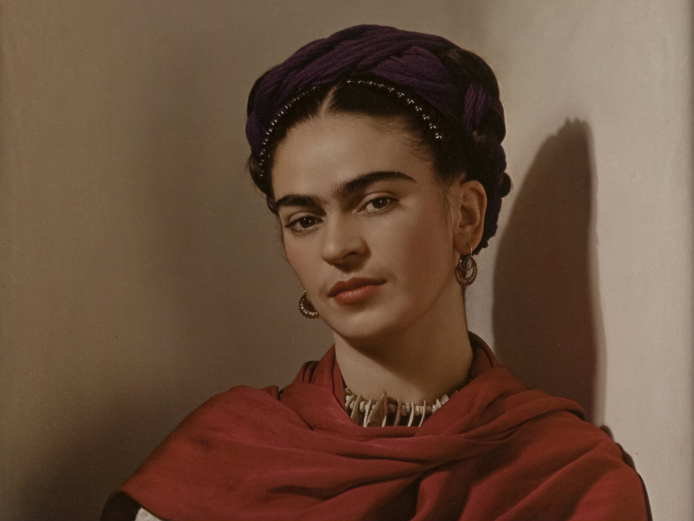
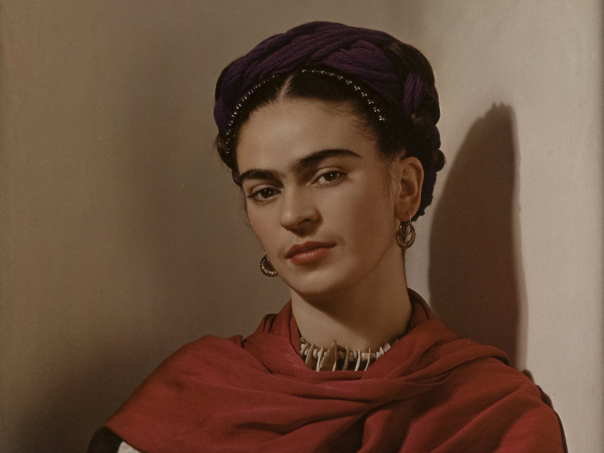

Las dos Fridas

En el siguiente hipervínculo verás más información

Biografia de Frida Kahlo
En el siguiente cuadro podrás leer un poco sobre su fallecimiento
FRIDA KAHLO (MAGDALENA CARMEN FRIDAKAHLO CALDERÓN) nació el 6 de julio de 1907 en la Ciudad de México, en la casa que fuera propiedad de sus padres desde 1904, y que hoy se conoce como la Casa Azul.
Hija de Wilhelm (Guillermo) Kahlo, de ascendencia alemana, y de la mexicana Matilde Calderón, Frida fue la tercera de cuatro hijas de este matrimonio. Matilde y Adriana, fueron las mayores y Cristina, la menor.
A los seis años Frida enfermó de poliomielitis, causándole que su pierna derecha quedara más corta; esto fue motivo de burlas. Sin embargo, esto no le impidió ser una estudiante inquieta y tenaz. Realizó sus estudios en la Escuela Nacional Preparatoria.
Sus diferentes formas de pensar:
Creó diferentes obras:

Biografia de Frida Kahlo
En el siguiente cuadro podrás leer un poco sobre su fallecimiento